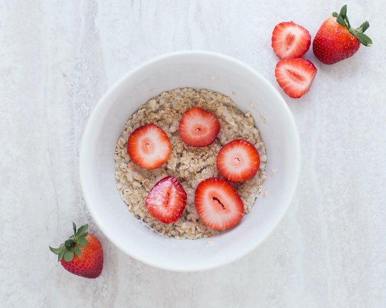

Breakfast Oatmeal

Description
I eat this bowl of oatmeal (or slight variations) for breakfast every single weekday. It's filling, tasty, and very warming for those chilly New England mornings.
It's my weekday morning go-to because it's quick, easy to make, and quite healthy. Feel free to test out the exact recipe below, or get creative and make your own variation. Please note:Specific quantities are deliberately omitted from this recipe because preferences for liquid quantity, fruit quantity, and nut quantity vary greatly. You know yourself best, so if you tend to like more of something, add more of that thing.
Ingredients
- Rolled oats (they must be old fashioned rolled oats, not quick oats)
- Boiling water
- Fruit of choice (I often use dried fruit like raisins)
- Nut of choice (I often use walnuts)
- Warm spice of choice (cinnamon is my go-to, but cardamom is also yummuy)
Steps
- Grab a relatively large bowl (like for a bowl of soup, rather than a cup of soup)
- Place your desired quantity of your fruit(s) and nut(s) of choice into the bowl. It is crucial that they go in first.
- Sprinkle some of your chosen spice over the fruit and nut mixture. Go easy here. The fastest way to ruin a bowl of oatmeal is too much spice.
- Cover the spice(s), fruit(s), and nut(s) with your desired quantity of oats.
- Pour your desired quantity of water over the contents of the bowl. I like my oats not too watery but not too dry, so I pour until I can just see the water beneath the top level of oats.
- Set a timer for 5 minutes.
- After the 5 minutes are up, stir the oatmeal thoroughly to evenly distribute the spices(s), fruit(s), and nut(s).
- Enjoy!